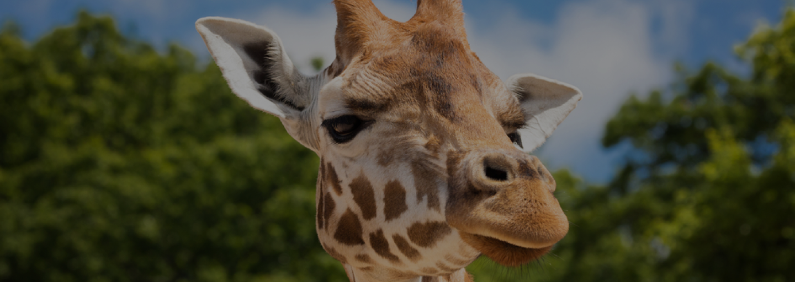

ORIGINE: ANIMALE TERRESTRE
GIRAFFA
La giraffa è un mammifero terrestre che vive nella savana e nelle aree boschive dell’Africa.
PERCHÈ È IN VIA DI ESTINZIONE?
La giraffa è un animale minacciato soprattutto dalla deforestazione e di conseguenza alla perdita del loro habitat, e al cambiamento climatico che porta alla siccità.
- Dimensioni: è di grandi dimensioni, raggiunge le 2 tonnellate di peso e 5 metri e mezzo di altezza.
- Vita media: 25 anni.
- Colore: manto chiaro e collo lungo ricoperto da chiazze marroni, ha delle corna ricoperte da pelle e peli, più scuri.
- Alimentazione: foglie degli alberi più alti.
- Stile di vita: un animale che si distacca dalla famiglia creando branco ma arrivando all'età matura diventa più solitario.
- Curiosità: è animale che grazie alle sue possenti zampe riesce a sferrare calci letali.